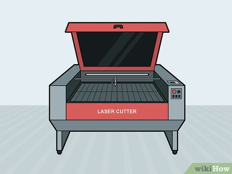
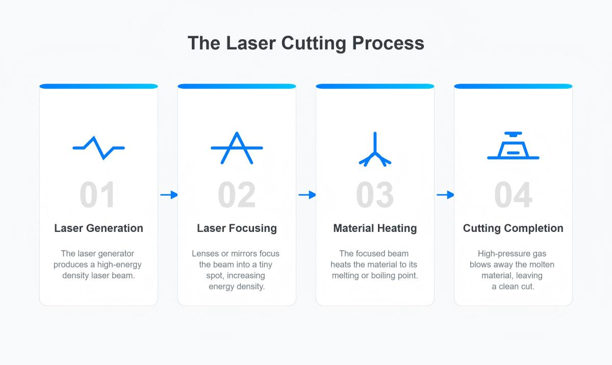
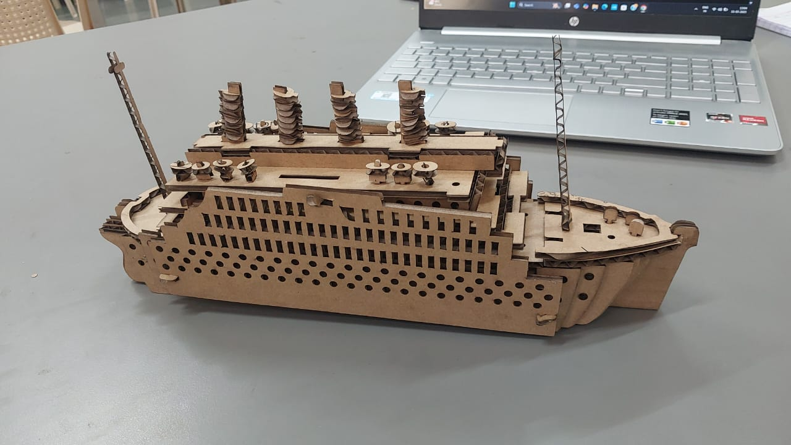
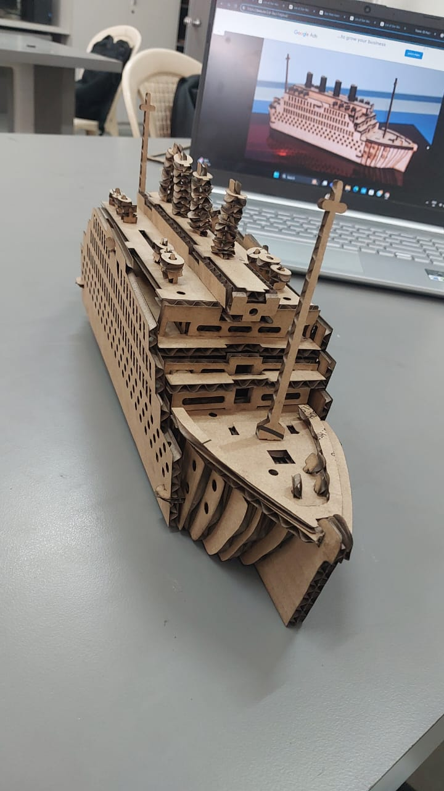

7-Day Learning Journey of Laser Cutting
1Intro & Applications

Professional CO2 laser cutter processing materials with precision
What is laser cutting?
- Thermal cutting process using focused laser beam
- Computer-controlled precision manufacturing
- Non-contact material processing method
- Versatile tool for prototyping and production
Types of lasers
- CO2 Lasers: Wood, acrylic, leather, paper, fabric
- Fiber Lasers: Metals, some plastics, high precision
- Diode Lasers: Light engraving, hobby applications
Safety basics
- Eye protection and laser safety glasses
- Proper ventilation and fume extraction
- Fire safety protocols and emergency procedures
- Material safety data sheets (MSDS) knowledge
Activity: List 5 laser-cut items you encounter daily
2Hardware & Software

Professional laser cutting software showing vector design and cutting parameters
Laser cutter components
- Laser tube: CO2 gas mixture generates laser beam
- Cutting bed: Honeycomb or slat support system
- Exhaust system: Fume extraction and filtration
- Control electronics: Motion control and laser power
- Cooling system: Water cooling for laser tube
Software: LaserCAD & alternatives
- Industry standard LaserCAD software versions
- Alternative software: LightBurn, RDWorks, K40 Whisperer
- CAD integration with AutoCAD, Illustrator, Inkscape
- File import/export capabilities and compatibility
Vector vs Raster & file types
- Vector (.svg, .dxf): Cutting lines, precise scalable graphics
- Raster (.png, .jpg): Engraving, photographic reproduction
- File preparation and optimization techniques
- Color coding for different operations
Activity: Design a basic geometric shape in vector software
3Design Basics

Various laser cut wooden products showing cut and engrave techniques
Cut vs engrave setup
- Cutting: Full power, optimal speed, complete material penetration
- Engraving: Variable power, controlled depth, surface marking
- Layer management and operation sequencing
- Color coding system for different functions
Design tips for press fit
- Kerf width compensation for tight joints
- Material thickness variations and tolerances
- Joint design: tabs, slots, living hinges
- Assembly sequence planning
Activity: Design a small box with engraving decoration
4Materials & Settings

Various laser cut wooden products showing cut and engrave techniques
Materials compatibility
- Wood: Plywood, MDF, hardwoods (various thicknesses)
- Acrylic types: Cast vs extruded, clear vs colored
- Paper & cardboard: Prototyping, templates, packaging
- Other materials: Leather, fabric, foam, some plastics
Power/speed settings optimization
- Power percentage vs material thickness relationship
- Speed settings for quality vs efficiency balance
- Multiple pass techniques for thick materials
- PPI (Pulses Per Inch) for engraving quality
Testing procedures
- Speed/power test grids and matrices
- Material sample testing protocols
- Quality assessment criteria
- Parameter documentation and library building
Activity: Run a speed/power test grid on cardboard
5Operating the Laser
Machine setup procedures
- Focusing: Laser beam focus adjustment for material thickness
- Bed setup: Material positioning and securing
- Air assist: Compressed air for clean cuts and fire prevention
- Exhaust system: Proper ventilation and fume extraction
File processing & job execution
- Sending design files to laser cutter
- Job queue management and batch processing
- Preview functions and cut path verification
- Real-time monitoring during operation
Safety checks & emergency procedures
- Pre-operation safety checklist
- Emergency stop button locations and procedures
- Fire suppression systems and protocols
- Personal protective equipment (PPE) requirements
Activity: Cut your first real design from concept to completion
6Project Day
Project planning & execution
- Useful projects: Phone stands, storage boxes, 3D assemblies
- Design complexity progression and skill building
- Functional vs decorative design considerations
- Time management and project scope planning
File preparation & optimization
- Design finalization and technical review
- Nesting layouts for material efficiency
- Cut order optimization for quality and speed
- Backup plans and design alternatives
Assembly & finishing
- Component organization and identification
- Assembly sequence and joint fitting
- Post-processing: sanding, gluing, finishing
- Quality control and final inspection
Activity: Complete & document your project with photos and notes
7Review & Maintenance
Common issues & troubleshooting
- Burn marks: Excessive power, slow speed, poor ventilation
- Incomplete cuts: Low power, fast speed, focus issues
- Edge quality problems and surface finishing
- Dimensional accuracy and kerf compensation
Basic maintenance procedures
- Lens cleaning: Proper techniques and cleaning materials
- Mirror alignment: Beam path optimization
- Cutting bed maintenance and honeycomb cleaning
- Exhaust system filter replacement and maintenance
Project showcase & reflection
- Documentation methods: photos, videos, process notes
- Portfolio development and presentation skills
- Peer review and constructive feedback
- Future learning paths and advanced techniques
Activity: Present final work & reflect on learning journey